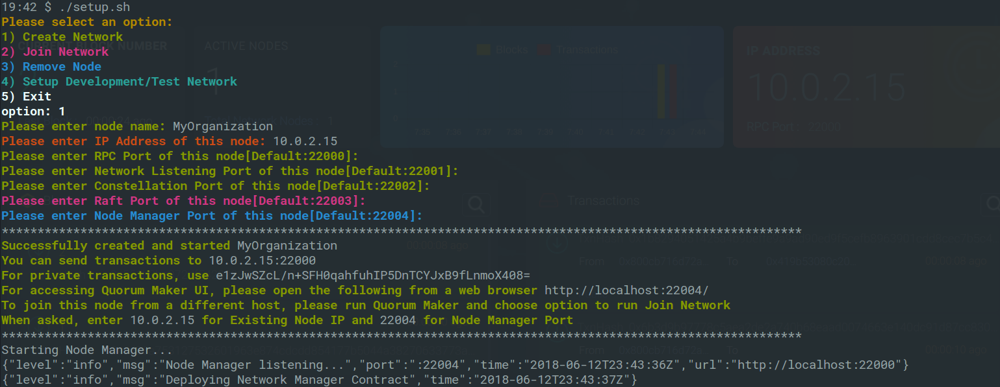
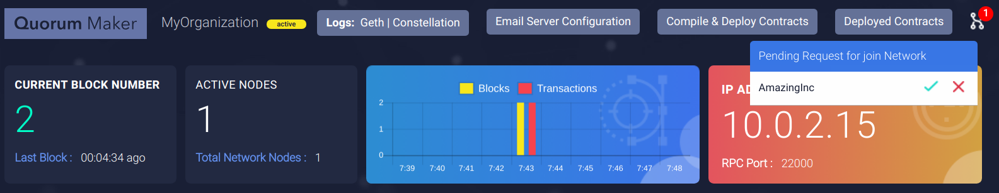
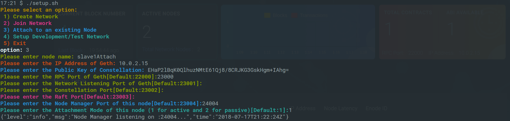
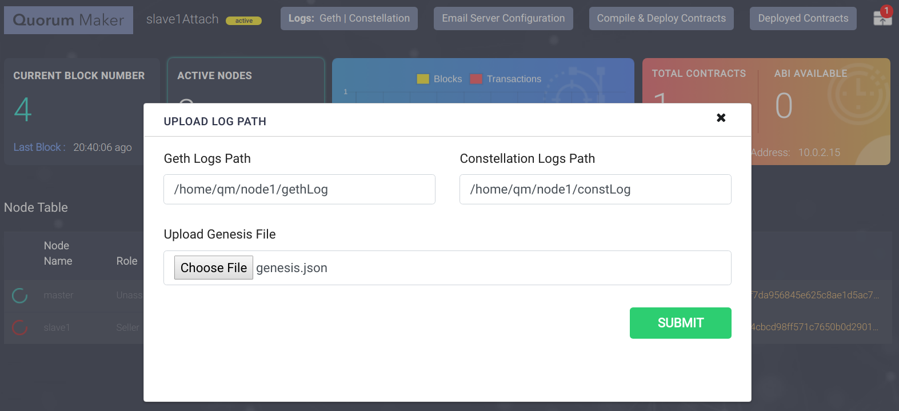
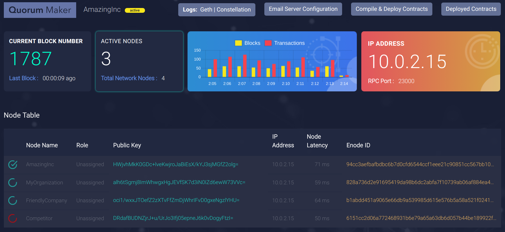
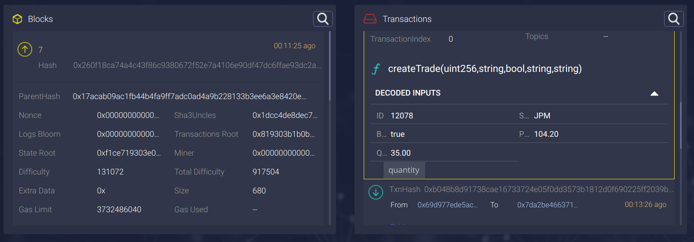
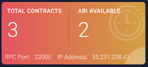

Synechron's Quorum Maker is a tool that allows users to create and manage Quorum network. Manually editing configuration files and creating nodes is a slow and error-prone process. Quorum Maker can create any number of nodes of various configurations dynamically with reduced user input. This provides a wizard-like interface with a series of questions to guide the user when creating nodes. Quorum Maker can create nodes to:
Quorum Maker v2.4 is an upgrade on v1.0 released by Synechron in October 2017. This upgrade, and future expected upgrades, aim to support application developers in the pursuit of production readiness for the growing number of applications built on top of the Quorum platform.
| # | Features | V 1.0 | V 2.4 |
|---|---|---|---|
| 1 | Create Network | |
|
| 2 | Join Network | |
|
| 3 | Attach to existing Quorum Node | |
|
| 4 | Quick Setup with Docker | |
|
| 5 | Quick network with Docker Compose | |
|
| 6 | Wizard Based Setup | |
|
| 7 | Non Interactive Setup | |
|
| 8 | Quorum Chain Consensus | |
|
| 9 | Raft Consensus | |
|
| 10 | Istanbul PBFT Consensus | |
|
| 11 | Network Map Service | |
|
| 12 | Node Monitoring | |
|
| 13 | Web UI | |
|
| 14 | Block Explorer | |
|
| 15 | Transaction Explorer | |
|
| 16 | Smart Contract Deployer | |
|
| 17 | Smart Contract Explorer | |
|
| 18 | Transaction Parameters View | |
|
| 19 | Auto ABI upload for Truffle Deployments | |
|
| 20 | Email Notification | |
|
| 21 | Online Logs View | |
|
| 22 | Restful API | |
|
| 23 | Multi Operating System Support | |
|
| 24 | Mobile Device Support | |
|
The first step to use Quorum Maker is to clone the source code from GitHub.
bash
$ git clone git@github.com:synechron-finlabs/quorum-maker.git
Once the repository is successfully cloned, change to the Quorum Maker directory by $ cd quorum-maker and run $ ./setup.sh script. To minimize the pre-requisites and make setup easy, Quorum Maker uses docker and rest of the dependencies are baked to syneblock/quorum-maker image.
Quorum Maker allows to quickly spin up a Quorum network for development or test purpose using Docker Compose with minimal input. Nodes created would be fully functional with all the features of Quorum as well as Quorum Maker. This allows developers to experiment with latest features with different number of nodes.
Once the repository is successfully cloned, change to the Quorum Maker directory by $ cd quorum-maker and run $ ./setup.sh script. Choose the option 4 to Setup Development/Test Network. This will ask you to provide a project name and number of nodes to be created. You can either leave to the default values or enter your choice.

A series of commands will be executed and you can see that a new directory with the name of the project your entered get created. This directory contains a docker-compose.yml and as many directories as the number of nodes you asked to create.
After the project is created, change to the directory just created and run $ docker-compose up to bring up the network. You will see each node coming up and node managers for each node getting started. Once the activities stop, you will have a fully functioning Quorum Network running.

Note: By default Quorum Maker creates bridge network with
subnet: 10.50.0.0/16andgateway: 10.50.0.1. If you would like to run multiple Quorum Network on same machine, change this setting on the generateddocker-compose.
Each node created gets it own IP address starting with 10.50.0.2. Following are the standard ports used by Quorum Maker.
RPC Port : 22000
Whisper Port : 22001
Constellation Port : 22002
RPC Port : 22003
Quorum Maker Node Manager Port : 22004
You can now connect to the Quorum Maker UI for each node from a web browser by pointing to http://10.50.0.2:22004, http://10.50.0.3:22004 etc.

Note: By default, Quorum Maker doesn't expose ports to the host due to possible conflicts, when running Development/Test Network. You can update
docker-compose.ymlto expose any port you would like to be accessible outside your computer.
Quorum Maker supports creating nodes on multiple machines and form a fully decentralized Quorum network. Each node administrators can clone Quorum Maker and run the same setup.sh script create a new network or join an existing one.
Once the repository is successfully cloned, change to the Qorum Maker directory by $ cd quorum-maker and run $ ./setup.sh script.
After the required docker images are downloaded, Quorum Maker will present with few questions to complete the node setup.
Please select an option:
1) Create Network
2) Join Network
3) Attach to an existing Node
4) Setup Development/Test Network
5) Exit
option: 1
Please enter node name: Org1
Please enter IP Address of this node: 10.0.2.15
Please enter RPC Port of this node[Default:22000]:
Please enter Network Listening Port of this node[Default:22001]:
Please enter Constellation Port of this node[Default:22002]:
Please enter Raft Port of this node[Default:22003]:
Please enter Node Manager Port of this node[Default:22004]:
This completes the creator node startup procedure. Quorum Maker collects the user provided parameters in order to generate geth and constellation inside the docker container. It also starts the NodeManager service. and creates a directory with the node name provided. This directory has the script to start the node and other files required. You can stop the node any time using Ctrl + C, and restart by running ./start.sh from the node directory (Eg. Org1).

Once a node is created, you can create and join more nodes to form a Quorum Network. Ideally subsequent nodes should be created on other computers. If you are creating another node on the same computer, please make sure to use different ports. In this case you can use the same Quorum Maker clone, since it creates separate directories for each node.
bash
$ cd quorum-maker
$ ./setup.sh
After the required docker images are downloaded, Quorum Maker will present users with a few questions to complete the node setup.
Please select an option:
1) Create Network
2) Join Network
3) Attach to an existing Node
4) Setup Development/Test Network
5) Exit
option: 2
Please enter node name: Org2
Please enter IP Address of existing node: 10.0.2.15
Please enter Node Manager Port of existing node: 22004
Please enter IP Address of this node: 14.0.2.30
Please enter RPC Port of this node[Default:22000]:24000
Please enter Network Listening Port of this node[Default:24001]:
Please enter Constellation Port of this node[Default:24002]:
Please enter Raft Port of this node[Default:24003]:
Please enter Node Manager Port of this node[Default:24004]:

At this point, a directory with the node name is created and most of the files are created. To join the existing network, the active node requires the Genesis file specific to the network. Quorum Maker will contact the node chose in the wizard and request permission to join and receive the Genesis file. An administrator of that node will get notifications on UI and e-mail for the join request and needs to approve it.
Note: The joining node will wait 5 minutes for the approval. If the request is not approved within that time, the Quorum Maker will quit. But the administrator of the other node can approve the request any time. Once the request is approved, the node can be restarted by executing
./start.shfrom the directory created and the setup will be resumed.

You can enjoy most of the features of Quorum Maker by attaching it to an existing Quorum Node. By having all existing nodes attached through Quorum Maker, it can eventually provide all features as native setup.
Note: Currently this is an expiremental feature and only Block and Transaction explorers are fully functional.
Once the repository is successfully cloned, change to the Quorum Maker directory by $ cd quorum-maker and run $ ./setup.sh script.
After the required docker images are downloaded, Quorum Maker will present with few questions to complete the node setup.
Please select an option:
1) Create Network
2) Join Network
3) Attach to an existing Node
4) Setup Development/Test Network
5) Exit
option: 3
Please enter node name: MyRemoteNode
Please enter the IP Address of Geth: 35.231.238.41
Please enter the Public Key of Constellation: emupTbaUhpqUvezg4e4O2LywHer34qHAABNz+vAwWns=
Please enter the RPC Port of Geth[Default:22000]:
Please enter the Network Listening Port of Geth[Default:22001]:
Please enter the Constellation Port[Default:22002]:
Please enter the Raft Port[Default:22003]:
Please enter the Node Manager Port of this node[Default:22004]:
Please enter the Attachment Mode of this node (1 for active and 2 for passive)[Default:1]:1
Note: Except Node Manager port, all other details are of existing node. Please make sure to use an available port for Node Manager to avoid port conflicts.
Note: If the existing node is running locally, do not use 127.0.0.1 for the IP Address while attaching, since Quorum Maker run inside docker. Use the host IP address.
Note: Currently Quorum Maker assumes empty password for defualt (coinbase) account of exising Quorum Node. In a futre release Quorum Maker will support non empty passwords.

Active Attachment allows you to migrate your existing nodes that was not created with Quorum Maker to a fully Quorum Maker equivalent. At the core, Quorum Maker uses Network Map Contract to share the details of each participant node. Due to security and transperancy reasons, this is a public smart contract. When attaching to a node that was not created using Quorum Maker, it will deploy Network Map Contract. This is an active participation in the network. Quorum Maker can also detect an existing instance of Network Map Contract and only register the node, instead of deploying a new instance. This allows Quorum Maker to act as a native installation once all nodes have Quorum Maker attached.
If you do not wish Quorum Maker to deploy a public contract but still want to use some of the features of Quorum Maker, you can attach in Passive mode. Most of the features except Node Explorer work as expected in this mode.
You can point to the location of your existing node's Geth and Constellation log directories and Quorum Maker can make them accessible through it's UI. When you access the UI after attaching to an exisisting Quorum node, a notification icon appears on the top right corner. Click on this to open up the window to enter the location of the log directory.
Note: Due to browser security restrictions, File Chooser doesn't pickup the fully qualified path of a directory. Please enter this manually.
Quorum Maker attached to an existing node can even approve join requests. To enable this feature choose the Genesis file of this network.
After you SUBMIT changes, please restart Quorum Maker Node to make the changes effect.

By default Quorum Maker runs in Wizard mode to walk user through the setup process. But for advanced users this might be time consuming and Quorum Maker provides non-interactive mode to speed up the setup. It also useful to run in non-interactive mode from shell scripts or DevOps tools.
For a quick help on usage and options available, run ./setup.sh -h or ./setup.sh --help
Quorum Maker follows Unix style flags, prefixed with - for single letter flags and -- for multi letter flags.
Default usage is ./setup.sh COMMAND [OPTIONS]
Run ./setup.sh create [OPTIONS] for creating node. Following are the options available.
For create command:
-n, --name Name of the node to be created
--ip IP address of this node (IP of the host machine)
-r, --rpc RPC port of this node
-w, --whisper Discovery port of this node
-c, --constellation Constellation port of this node
--raft Raft port of this node
--nm Node Manager port of this node
--ws Web Socket port of this node
E.g.
./setup.sh create -n master --ip 10.0.2.15 -r 22000 -w 22001 -c 22002 --raft 22003 --nm 22004 --ws 22005
OR
./setup.sh create --name master --ip 10.0.2.15 --rpc 22000 --whisper 22001 --constellation 22002 --raft 22003 --nm 22004 --ws 22005
Run ./setup.sh join [OPTIONS] for joining an existing network. Following are the options available.
``` For join command:
-n, --name Name of the node to be created --oip IP address of the other node (IP of the existing node) --onm Node Manager port of the other node --tip IP address of this node (IP of the host machine) -r, --rpc RPC port of this node -w, --whisper Discovery port of this node -c, --constellation Constellation port of this node --raft Raft port of this node --nm Node Manager port of this node --ws Web Socket port of this node ```
E.g.
./setup.sh join -n slave1 --oip 10.0.2.15 --onm 22004 --tip 10.0.2.15 -r 23000 -w 23001 -c 23002 --raft 23003 --nm 23004 --ws 23005
OR
./setup.sh join -n slave1 --oip 10.0.2.15 --onm 22004 --tip 10.0.2.15 --rpc 23000 --whisper 23001 --constellation 23002 --raft 23003 --nm 23004 --ws 23005
Run ./setup.sh attach [OPTIONS] for attaching to an existing Quorum Node. Following are the options available.
For attach command:
-n, --name Name of the node to be created
--ip IP address of existing Quorum
--pk Public Key of existing Constellation
-r, --rpc RPC port of the existing Quorum
-w, --whisper Discovery port of this node
-c, --constellation Constellation port existing node
--raft Raft port of existing node
--nm Node Manager port of this node (New Node Manager will be created by this command)
--active Active attachment mode
--passive Passive attachment mode
E.g.
./setup.sh attach -n node1 --ip 10.0.2.15 --pk BULeR8JyUWhiuuCMU/HLA0Q5pzkYT+cHII3ZKBey3Bo= -r 22000 --whisper 21000 --c 9001 --raft 50401 --nm 11004 --active
OR
./setup.sh attach --name node1 --ip 10.0.2.15 --pk BULeR8JyUWhiuuCMU/HLA0Q5pzkYT+cHII3ZKBey3Bo= --rpc 22000 --whisper 21000 --constellation 9001 --raft 50401 --nm 11004 --active
Run ./setup.sh dev [OPTIONS] for creating a Quorum Network for Development and Test purposes. Following are the options available.
For dev command:
-p, --project Project Name
-n, --nodecount Number of nodes to be created
E.g.
./setup.sh dev -p TestNetwork -n 3
OR
./setup.sh dev --project TestNetwork --nodecount 3
Quorum Maker provides a web interface to monitor the network. You can explore the blocks getting created and the transactions in them. Node admin can watch the performance of their node and other connected nodes to ensure availability and network resilience.
Administrators can view geth and constellation logs from Quorum Maker.

Click on the node name of the table to view node details. You can also update the node name and role of your own node. Node name and Role are useful in a large network to identify the peers before sending transactions. Refer to the Quorum Maker API below to access node details using restful clients.

The Blockchain Explorer on Quorum Maker is customized for Quorum. You can click on the big block number button, and the blockchain explorer will be displayed. From here you can scroll through blocks, search by any content or expand to view more details. Transactions for the selected block is displayed on the right side and all the transactions belong to the block is highlighted in yellow. You can expand each transaction and view more details. Quorum has 3 types of transactions; public, private and Hash Only. Public transactions can be seen by every node on the network and is marked with a blue color Public label. Private transactions are available to your node to view and marked with a green color Private label. Either you were a sender or recipient to these transactions. You can only the see the hash of the transactions to those you were not a party to. These are marked with a red color Hash Only label.

Quorum Maker can decode the sendTransaction parameters and displayed in human readable format. This is can aid both developers and node administrators get more visual details of the transactions in the network.

To view the transaction parameters, select the transaction from the Transaction Explorer and scroll down to the end. Signature of the function and the decoded values in a table format will be displayed. You can mouse over to view any values truncated due to display real estate limitations.
To decode the values, Quoroum Maker requires ABI file of the Smart Contract. All contracts deployed through Quorum Maker has ABI available and the values will be decoded automatically. You can upload/attach the ABI file of the Smart Contract you deployed externally from the Smart Contract Explorer.

Note: Currently Quorum Maker supports ABI files generated by Truffle, solc compiler and solc Node.JS version.
Smart contracts can be deployed from Quorum Maker. Users can choose solidity files (Even multiple contracts !) and deploy them publicly or privately.
All the deployed contracts are easily accessible from the UI in the format contractAddress_contractName and contain the corresponding ABI, Bytecode and JSON

The Contract Explorer in Quorum Maker can view all the smart contracts deployed in the blockchain network. The Contract Explorer displays both public and private Smart Contracts. You can also view the details of them and attach ABI of those missing.

The orange button on the top-right side of dashboard shows the total number contracts deployed on the blockchain. Click on this button to view the Contract Explorer. It also displays the ABI files available. All contracts deployed through Quorum Maker has ABI available already. If you are deploying through an external tool like Truffle, you can attach the ABI of the contract, so that transaction details of the contract can be viewed.

Contract Explorer works hand-in-hand with Block and Transaction Explorer. Please read sections on Transaction Explorer for more details.
You can view both Geth and Constellation logs from the Quorum Maker UI. In any event of failure, quick access to logs are important. Combined with E-Mail notification feature, administrators can even check the logs from a mobile device and spot errors. Quorum Maker also rotates the logs to keep the file size minimal.

Quorum Maker an also notify a request for join from another node. This lets node administrators not be online all the time to approve/reject a request.
If a new node is joined, Quorum Maker notifies this to all node administrators with both Joiner and Approver details.
3 template files are available, one for each type of notification email.
Even though Smart Contracts can be deployed from Quorum Maker UI, we recommend to use specialized tools like Truffle (https://github.com/trufflesuite/truffle) for this. Quorum Maker can automatically attach the ABI files generated by Truffle to the smart contracts deployed on the node. This allows you to view the Smart Contract Functions called and the parameters without having to attach the ABIs manually.
Please follow the steps below to enable auto attaching of ABIs.
Quorum Maker provides APIs that it used internally, that are also useful for application development. Below is a list and explanation of each:
| URI | Method | Description |
|---|---|---|
| /block | GET | This endpoint returns a list of latest n blocks if the query string parameter number is equal to n. If the query string parameter reference is provided with query string parameter number equal to n, then n blocks starting before (reference ��� 1) is returned |
| /block/{block_no} | GET | This endpoint returns the details of a particular block based on block number |
| /txn | GET | This endpoint returns a list of latest n transactions if the query string parameter number is equal to n |
| /txn/{txn_hash} | GET | This endpoint gets the transaction details of a transaction based on hash. If txn_hash is sent as "pending" it returns a list of all pending transactions |
| /txnsearch/{txn_hash} | GET | This endpoint returns details of a particular transaction based on transaction hash alongside its corresponding block details for displaying the corresponding block information of the queried transaction on UI |
| /latestBlock | GET | This endpoint the latest block number and the difference between present time and the time of creation of the block |
| /peer | GET | This endpoint returns a combination of admin.nodeInfo and certain other details such as current node name, node count, active status, IP, RPC port, raft role, raft ID, blocknumber, pending transaction count as well as the genesis file |
| /peer/{peer_id} | GET | This endpoint returns the information gleaned from admin.peers but filtered by enode-id of a particular peer for displaying the pop up from the node table |
| /nodeList | GET | This endpoint returns the node name, role, public key and enode of all participants in the network by querying the Network Manager contract |
| /pubkeys | GET | This endpoint returns a list of network participants and their corresponding public keys for populating the contract deployment tab's network participants list |
| /deployContract | POST | Multiple contracts can be uploaded via multipart file upload through this endpoint. The source .sol files are compiled using solc and subsequently deployed. The deployment is done either publicly or privately. In case of private deployment the public keys of the concerned parties are sent from UI. The list of network participants and their corresponding public keys are fetched using a REST API call. Error messages that occur from compilation failures are also displayed on UI. All the deployed contracts are easily accessible from the UI in the format |
If you need to run Quorum Maker with a different version of Geth or Constellation than comes with default docker image, use Quorum-Maker-Image. Create docker image locally and run Quorum Maker again.
Quorum Maker can be run on Windows/Mac using Docker. Some of features may not be available as running natively on Linux. Please refer to Docker doccumentation for missing features on Windows/Mac.
$ ./setup.sh and follow the instructions to setup Quorum Network as explained before in this document.Note: Since Docker can not expose bridge network to host on Mac, Quorum Maker automatically exports ports when creating Development/Test network on Mac.
Note: If you create a Development/Test Network on Mac, the ports are automatically exported in sequential number, starting 20104, 20204 and so on for each you node created.
For full support for running on Windows/Mac, Quorum Maker provides Vagrant box.
$ vagrant up to provision a vagrant box with support for Ubuntu 16.04, Docker and Docker Compose.$ vagrant ssh to remote into vagrant box with default user vagrant/home/vagrant. Run $ ./setup.sh and follow the instructions to setup Quorum Network as explained before in this document.Note: Vagrant box for Quorum Maker by default runs on 192.168.33.11. You can access Quorum Maker UI from Windows/Mac on a browser pointing to http://192.168.33.11:20104, http://192.168.33.11:20204 etc. (Quorum Maker automatically detects you are running from Vagrant and uses a different port than you entered to avoid conflicts. Read below)
Note: If you create a Development/Test Network, the ports are automatically exported in sequential number, starting 20104, 20204 and so on for each you node created.
Quorum Maker provides a responsive Web UI that can be viewed from smaller Mobile devices as well. We belive that having been able to monitor the network, view transactions and logs, approve/reject request from a mobile device will be a tremendous help for network administrators. Clubbed these with E-Mail notification feature of Quorum Maker, Support team can be available 24x7.


Note: Quorum Maker assumes user authentication and authorization will be handled by existing organizational security tools. A future release will support SSL and HTTPS.
Tip: Developers can expose Web UI running on their laptop using services like ngrok (https://ngrok.com/) for experimental purposes.
We expect the following areas to be part of future upgrades:
~~* Invalid Genesis
This happens while creating the nodes and this seems to be random issue. Please quit ./setup.sh and try again~~ FIXED
Change log V2.4 1. Added command line flags for running Quorum Maker non-interactively 2. Whitelist feature added for automatically accepting join requests from whitelisted IPs 3. Account explorer with account creation feature added 4. Attach mode restart notification added to UI 5. Attach mode contract updation based on enode instead of nodename from setup.conf 6. Logging added for incoming join requests 7. Redundant node name updation steps removed
Change log V2.3 1. Attaching nodes to exisisting Quorum node is fully supported. 2. Attached node can approve Join Requests. E.g. Fully migrate 7node example to Quorum Maker and add additional nodes. 3. Quorum Maker can deploy Smart Contracts using inheritance. 4. Auto attach ABI of smart contracts deployed using Truffle and Quorum Maker Smart Contract Deployer. 5. All solidity data types are supported on the transaction parameter view. 6. Enabled WS Ports for Web3 push service. 7. Additional template for sending test mail on email service registration 8. Added -d flag for start.sh of nodes to run in daemon mode.